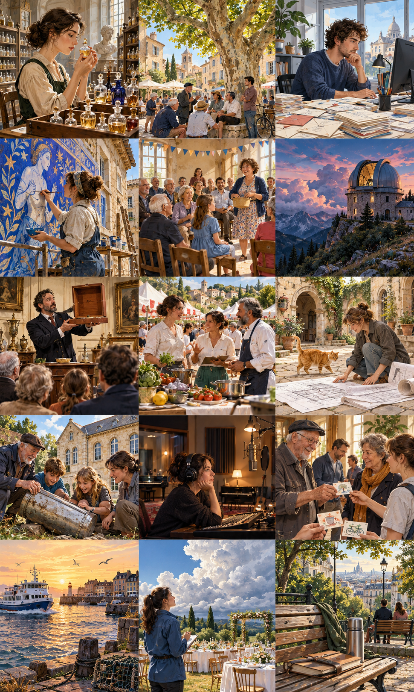

La société des bancs publics
The Public Bench Society
An ambitious urban blogger discovers that a secret society has been reviewing her city’s benches for years.

Zoé publiait chaque semaine une chronique sur la ville. Elle avait évalué les cafés, comparé les marchés et photographié suffisamment de portes colorées pour remplir un livre. Un jour, en cherchant un sujet moins coûteux, elle s’intéressa aux bancs publics. Sous l’un d’eux, elle aperçut une petite plaque portant trois lettres et une note sur dix. Elle pensa d’abord à une marque de fabricant. Puis elle retrouva le même signe sur un banc du canal, accompagné cette fois d’un commentaire minuscule : « Belle lumière, dossier hostile. » Quelqu’un pratiquait déjà la critique urbaine avec un sens du détail remarquable.
Show English translationHide English translation
Zoé published a weekly column about the city. She had reviewed cafés, compared markets, and photographed enough colorful doors to fill a book. One day, looking for a less expensive subject, she became interested in public benches. Beneath one, she noticed a small plate bearing three letters and a score out of ten. At first, she thought it was a manufacturer's mark. Then she found the same sign on a canal bench, this time with a tiny comment: 'Beautiful light, hostile backrest.' Someone was already practicing urban criticism with remarkable attention to detail.
Elle laissa un message dans la fente du banc, sans vraiment espérer de réponse. Trois jours plus tard, une enveloppe l’attendait à la rédaction. On l’invitait à une réunion de la Société des bancs publics, dont l’existence devait rester discrète. Zoé imagina des retraités excentriques munis de règles et de coussins. Elle trouva une livreuse, un étudiant, deux personnes âgées et un homme qui travaillait de nuit. Ils se réunissaient depuis quatre ans pour observer les endroits où l’on pouvait s’asseoir gratuitement. Les petites plaques, amovibles, étaient posées seulement pendant leurs séances, avec l’autorisation des services municipaux.
Show English translationHide English translation
She left a message in a gap in the bench without really expecting an answer. Three days later, an envelope awaited her at the editorial office. She was invited to a meeting of the Public Bench Society, whose existence was to remain discreet. Zoé imagined eccentric retirees equipped with rulers and cushions. She found a delivery worker, a student, two older people, and a man who worked nights. For four years, they had met to observe places where people could sit free of charge. The small removable plates were installed only during their sessions, with permission from municipal services.
Leur classement ne reposait pas uniquement sur le confort. Un banc pouvait offrir une vue magnifique, mais être inaccessible avec une canne. Un autre permettait de surveiller des enfants sans tourner constamment la tête. La livreuse évaluait les endroits où poser un sac ; le travailleur de nuit, l’ombre disponible le matin. Zoé demanda lequel était le meilleur. Ils lui répondirent par une autre question : pour qui, et à quel moment ? Elle comprit que son futur article, intitulé provisoirement « Les dix meilleurs bancs », risquait de simplifier précisément ce que ces gens avaient appris à regarder avec patience.
Show English translationHide English translation
Their ranking was not based solely on comfort. A bench might offer a magnificent view yet be inaccessible with a walking stick. Another allowed people to watch children without constantly turning their heads. The delivery worker evaluated places to put a bag; the night worker assessed morning shade. Zoé asked which was best. They answered with another question: for whom, and at what time? She understood that her future article, provisionally titled 'The Ten Best Benches,' risked simplifying exactly what these people had learned to observe patiently.
Le groupe hésitait à rendre son travail public. Une grande audience pourrait transformer certains coins tranquilles en attractions, alors que leur intérêt tenait justement à leur usage ordinaire. Zoé proposa de publier leur méthode plutôt que leurs adresses favorites. Les lecteurs seraient invités à examiner les bancs de leur propre quartier et à signaler les obstacles concrets. Elle préparerait une carte seulement pour les équipements dont la ville souhaitait améliorer l’accès. Après discussion, la société accepta. Son article comporta moins de belles photographies que d’habitude, mais davantage de questions précises : pouvait-on s’asseoir côte à côte, se relever facilement ou attendre à l’abri du vent ?
Show English translationHide English translation
The group hesitated to make its work public. A large audience might turn quiet corners into attractions, when their value lay precisely in ordinary use. Zoé suggested publishing their method rather than their favorite addresses. Readers would be invited to examine benches in their own neighborhoods and report concrete obstacles. She would prepare a map only for facilities whose access the city wanted to improve. After discussion, the society agreed. Her article contained fewer beautiful photographs than usual but more precise questions: could people sit side by side, stand up easily, or wait sheltered from the wind?
Les réponses remplirent sa boîte de réception. Certaines étaient fantaisistes, mais beaucoup signalaient des réparations simples : une planche cassée, une branche trop basse, un passage encombré. La mairie réalisa plusieurs interventions avant même que Zoé ait préparé son deuxième article. La société lui proposa alors de devenir membre. Elle accepta, à condition de pouvoir parfois venir sans prendre de notes. Lors de sa première séance officielle, elle resta dix minutes sur un banc qu’elle aurait auparavant jugé banal. Une voisine s’assit à côté d’elle et demanda l’heure. Pour une fois, Zoé n’avait ni classement ni publication à préparer. Elle répondit, puis rangea son téléphone.
Show English translationHide English translation
Replies filled her inbox. Some were fanciful, but many identified simple repairs: a broken plank, a low branch, an obstructed path. The council carried out several fixes before Zoé had even prepared her second article. The society then invited her to become a member. She accepted on condition that she could sometimes come without taking notes. During her first official session, she spent ten minutes on a bench she would once have considered ordinary. A neighbor sat beside her and asked the time. For once, Zoé had neither a ranking nor a publication to prepare. She replied, then put away her phone.